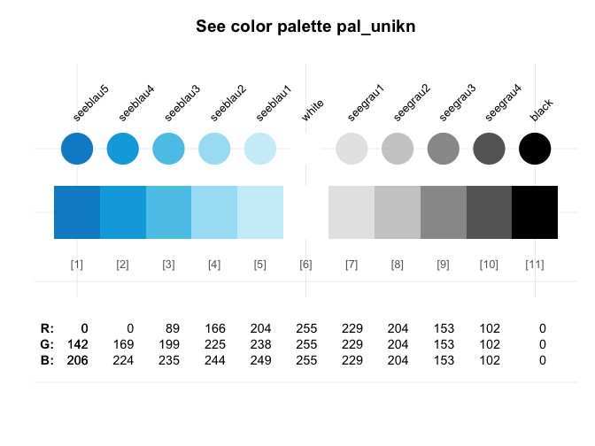
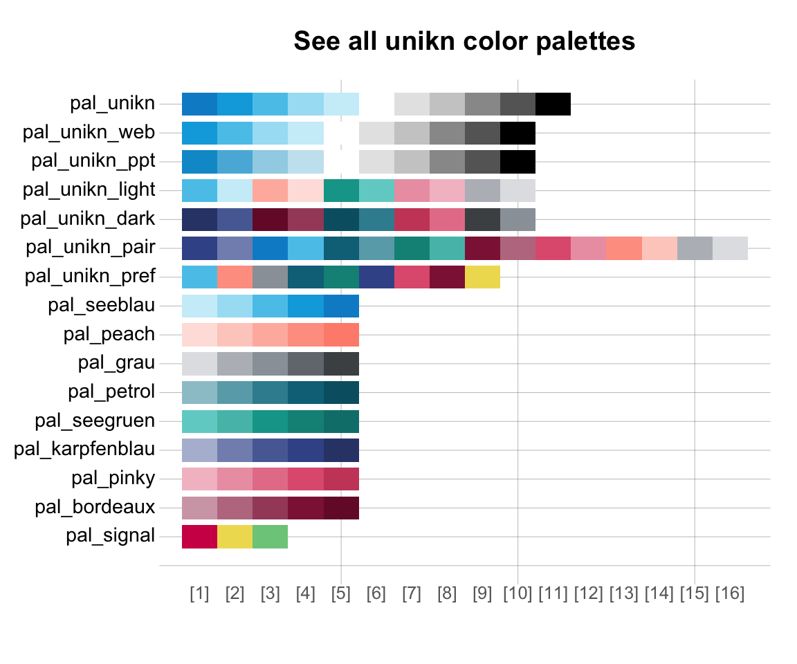
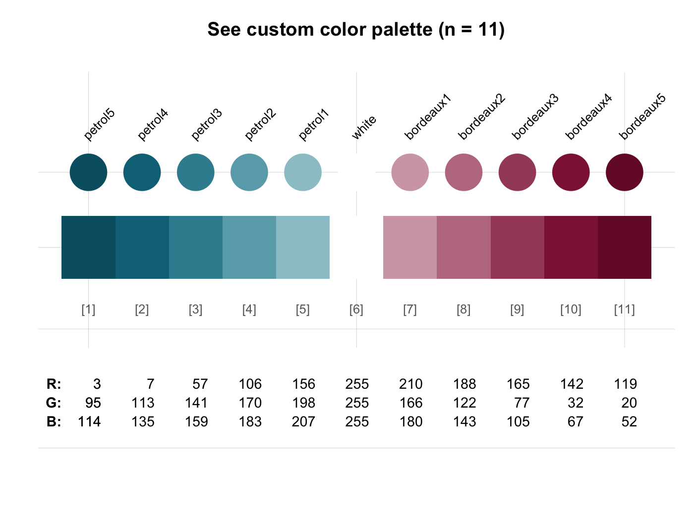
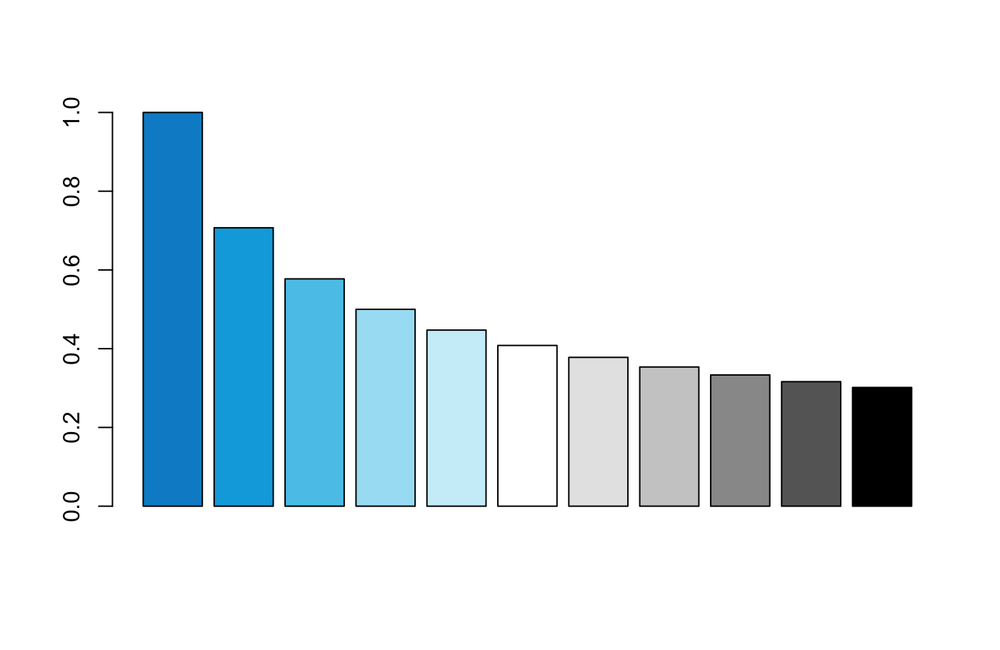
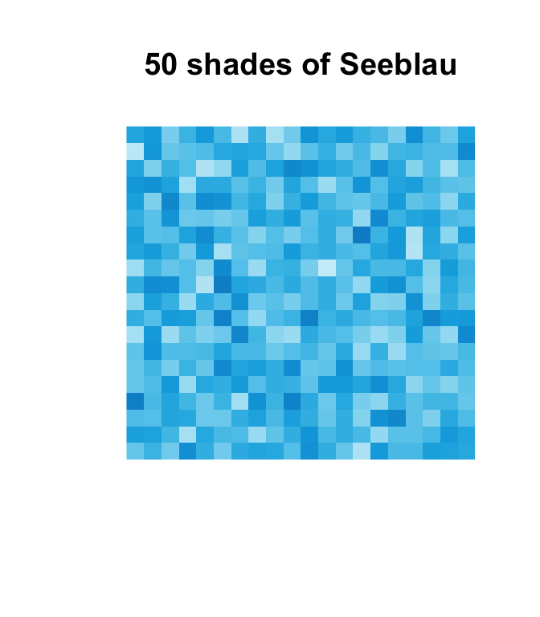
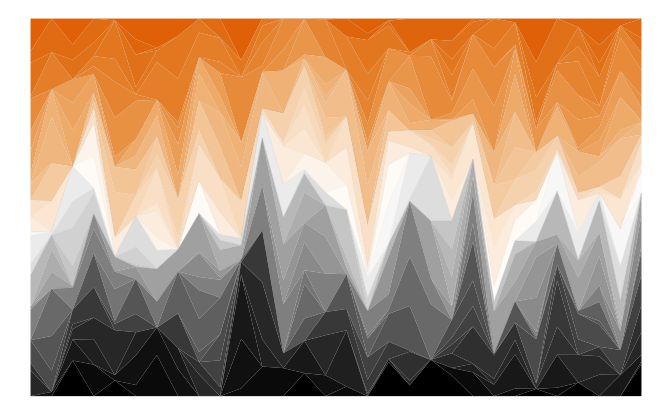
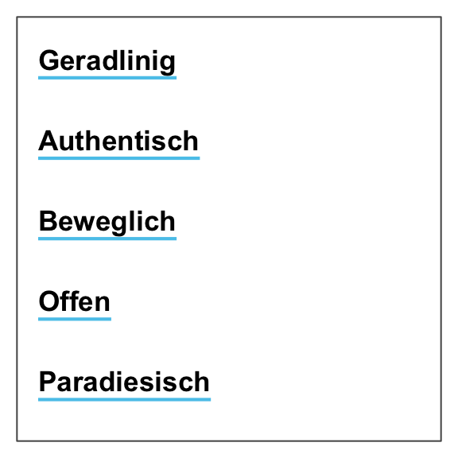
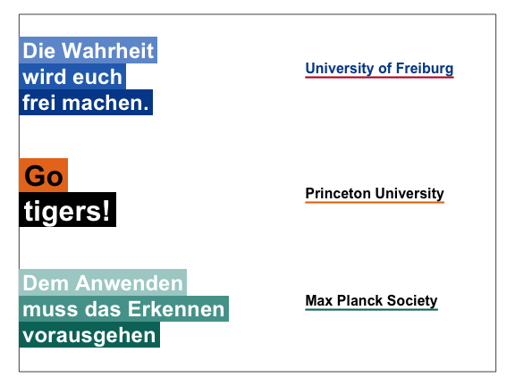

The unikn package enables using some elements of the University of Konstanz’s corporate design in R. unikn currently provides a range of dedicated color palettes for scientific visualizations and defines styled text elements (e.g., for marking, underlining, or plotting colored titles) that are consistent with the official design specifications (see this link for details). While the package is based on detailed specifications of a particular institution, its functionality can easily be adopted and extended for other purposes and institutions.
Background
Most major institutions devise corporate design (CD) manuals to create and maintain a consistent impression in presentations and publications. For instance, the University of Konstanz introduced a highly recognizable corporate design in 2014. Its key component is the consistent use of a Seeblau color and a corresponding color palette that blends various shades of Seeblau (in boxes, lines, and other graphical elements) with text (in black-and-white). (See the official brand information and the Corporate Design Manual (pdf) for details.)
The unikn package aims to facilitate the use of corporate design elements for users of R. While the correct use of default specifications should be simple and straightforward, we leave some flexibility for expert users (e.g., for creators of scientific visualizations).
The package currently provides 4 types of objects or functions:
- Dedicated colors and color palettes;
- Functions for viewing and changing color palettes (e.g.,
seecol()andusecol());
- Functions for plotting graphical objects (e.g., boxes and frames);
- Functions for plotting styled text elements (e.g., highlighting and underlining text).
Additional elements are added as they become available. Please use responsibly!
Installation
The current release of unikn is available from CRAN at https://CRAN.R-project.org/package=unikn:
install.packages('unikn') # install unikn from CRAN client
library('unikn') # load to use the packageThe current development version can be installed from its GitHub repository at https://github.com/hneth/unikn/:
# install.packages('devtools') # (if not installed yet)
devtools::install_github('hneth/unikn')
library('unikn') # load to use the packageColors
A distinctive and recognizable color scheme is the most obvious element of the University of Konstanz’s corporate design.
Basic color palettes
Basic color palettes are specified according to the Corporate Design Manual (pdf):
The default color palette pal_unikn combines:
- 5 shades of
pal_seeblau(reversed, i.e., from darker to lighter);
- the base R color
"white"(as the center color);
- 4 shades of grey (
pal_grau[1:4]);
- the base R color
"black"(as the last color).
This yields a symmetrical default color palette pal_unikn consisting of 11 colors:
# Default color palette: -----
# pal_unikn # 11 default colors
# View color palette (by plotting it): -----
seecol(pal_unikn)
A shorter version consisting of 10 colors is provided as
pal_unikn_web.An alternative color palette with 10 more muted colors (intended for PowerPoint presentations) is provided as
pal_unikn_ppt.
Evaluating seecol(pal = "unikn_basic") shows these 3 basic unikn color palettes.
All color palettes
Beyond the 3 variants of pal_unikn, the unikn package provides the following color palettes:
seecol("all")
Specifically, the Excel file on Colours for complex graphics defines 9 additional color palettes that are exported by unikn as the following named color palettes:
# Show 9 color gradient palettes:
seecol(pal = "grad_all")For details, evaluate or apply seecol() on the following color palettes:
# 8 mono-tone palettes: -----
# Name: Nr: Tone:
pal_seeblau # 5 shades of seeblau
pal_peach # 5 peach
pal_grau # 5 grau
pal_petrol # 5 petrol
pal_seegruen # 5 seegruen
pal_karpfenblau # 5 karpfenblau
pal_pinky # 5 pink
pal_Bordeaux # 5 Bordeaux
# 1 signal (Ampel) palette: -----
pal_signal # 3 AmpelEach color palette contains a preferred color.1 All preferred colors are contained in a corresponding color palette pal_unikn_pref:
# Using preferred colors: -----
pal_unikn_pref # color palette of preferred colors
pal_unikn_pref[1] # preferred (named) color 1
pal_unikn_pref[[1]] # color value 1: #59C7EB"
pal_unikn_pref["Seeblau"] # preferred color by nameAdditional pre-defined color palettes include:
# Plot additional color palettes: -----
seecol(pal_unikn_pref) # palette of 9 preferred colors
seecol(pal_unikn_light) # palette of 8 light colors (in 4 pairs)
seecol(pal_unikn_dark) # palette of 8 dark colors (in 4 pairs)
seecol(pal_unikn_pair) # palette of 16 paired colors (in 8 pairs)More flexible and complex color palettes can be created by using the seecol() and usecol() functions.
Color-related functions
The seecol() and usecol() functions provide a convenient interface for viewing and using color palettes.
Plotting color palettes
The seecol() function provides a quick overview over the contents of a color palette and allows comparisons between color palettes:
# Plot a color palette: -----
seecol(pal_unikn_pref)
Partial color palettes
When only a subset of a color palette are needed, the seecol() and usecol() functions provide a reasonable subset of a known ** unikn** color palette:
# All color palettes: -----
seecol(n = 4)
# Only pal_seeblau: -----
# seecol(pal_seeblau, n = 4)Changing and creating color palettes
The usecol and seecol functions provide some generic options for manipulating and showing color gradients based on given colors or color palettes. This serves 2 main functions:
- Reducing or extending existing color palettes (to arbitrary lengths).
- Mixing and merging colors and color palettes into new color palettes.
Here are some examples of these functions in action:
- Extending or reducing an existing color palette:
seecol(pal_unikn, n = 21) 
# seecol(pal_seeblau, n = 8) # provides a subset of "good" colorsNote that reducing an unikn color palette selects a suitable subset of its colors, rather than just truncating the scale.
- Mixing and merging colors and color palettes into new color palettes:
# Combining color palettes (and colors): -----
seecol(c(rev(pal_petrol), "white", pal_bordeaux), 11)
# seecol(c(rev(pal_seeblau), "white", pal_pinky), 11)
# seecol(c(rev(pal_seeblau), "white", pal_seegruen), 11)
# seecol(c(rev(pal_seeblau), "white", pal_peach), 11)Using color palettes
The unikn package exports the color palettes shown by seecol(pal = "all") and the 9 preferred colors of pal_unikn_pref (e.g., Seeblau, Seegruen, etc.) as named colors.
The usecol() function provides convenient access and additional options for using them in graphs. Here are some examples:
- Using unikn color palettes and functions in base R plots:
By default, simply set the color argument of a plot to usecol() with some unikn color palette:

Providing an additional value for n would reduce or extend the selected color palette and adding an opacity value for alpha (in the range [0, 1]) would regulate transparency.
- Visualizing unikn color palettes with
image:
# Random images:
set.seed(1)
n <- 20
m <- matrix(rnorm(n*n), ncol = n, nrow = n)
# image(m, col = seecol(pal_seeblau)) # seecol() shows & use colors
# image(m, col = usecol(pal_peach)) # usecol() only uses colors
# image(m, col = usecol(pal_seegruen))
# image(m, col = usecol(pal_petrol))
image(m, col = usecol(pal_seeblau, n = 50),
main = "50 shades of Seeblau", axes = FALSE)
- Using unikn in
ggplotcalls (using ggplot2):
# Example based on https://www.r-graph-gallery.com/137-spring-shapes-data-art/
# (1) Create data: ----
ngroup <- 50
names <- paste("G_", seq(1, ngroup), sep = "")
df <- data.frame()
set.seed(3)
for(i in seq(1:30)){
data = data.frame(matrix(0, ngroup, 3))
data[, 1] = i
data[, 2] = sample(names, nrow(data))
data[, 3] = prop.table(sample( c(rep(0, 100), c(1:ngroup)), nrow(data)))
df = rbind(df, data)}
colnames(df) <- c("X","group","Y")
df <- df[order(df$X, df$group) , ]
# (1) Choose colors: ----
# (a) using RColorBrewer:
library(RColorBrewer)
cur_col <- brewer.pal(11, "Paired")
cur_col <- colorRampPalette(cur_col)(ngroup)
cur_col <- cur_col[sample(c(1:length(cur_col)), size = length(cur_col))] # randomize
# (b) using unikn:
library(unikn)
cur_col <- usecol(pal = pal_unikn, n = ngroup)
# cur_col <- cur_col[sample(c(1:length(cur_col)), size = length(cur_col))] # randomize
# (3) Use ggplot2: ----
library(ggplot2)
ggplot(df, aes(x = X, y = Y, fill = group)) +
geom_area(alpha = 1, color = Grau, size = .01 ) +
theme_bw() +
scale_fill_manual(values = cur_col) +
theme_void() +
theme(legend.position = "none")
Generalization to other institutions
The color scales included in the unikn package are based on the CD manual of the University of Konstanz, Germany. However, the functionality provided by the package makes it easy and straightforward to define and use your own color schemes. Here are some examples from other institutions to illustrate how this can be achieved.
A. University of Freiburg, Germany:

The Albert-Ludwigs Universität Freiburg provides fairly extensive information on its corporate color scheme (available here and here). Colors can be defined in a variety of ways, but R comes with convenient tools (like col2rgb and convertColor in grDevices) to handle most cases. The most straightforward way of creating a new color palette in R is by using its HEX/HTML code (provided in character format). As the University of Freiburg kindly provides their colors in this format, we can easily define the corresponding color palettes as named vectors:
# Basic colors: https://www.zuv.uni-freiburg.de/service/cd/cd-manual/farbwelt
pal_freiburg_bluered <- c("#004a99", "#c1002a")
names(pal_freiburg_bluered) <- c("uni-blau", "uni-rot")
pal_freiburg_basic <- c("#004a99", "white", "#c1002a") # add "white" for better gradients
names(pal_freiburg_basic) <- c("uni-blau", "weiss", "uni-rot")
# Web colors: https://www.zuv.uni-freiburg.de/service/wsg/webstyleguide/farben
pal_freiburg_blue <- c("#004a99", "#2a6ebb", "#6f9ad3")
names(pal_freiburg_blue) <- c("blue-1", "blue-2", "blue-3")
pal_freiburg_grey <- c("#f2f3f1", "#e0e1dd", "#d5d6d2", "#c9cac8",
"#b2b4b3", "#9a9b9c", "#747678", "#363534")
names(pal_freiburg_grey) <- c("grey-0", "grey-1", "grey-2", "grey-3",
"grey-5", "grey-7", "grey-9", "grey-font")
pal_freiburg_info <- c("#2a6ebb", "#a7c1e3", "#7b2927", "#de3831", "#739600", "#92d400",
"#4d4f53", "#747678", "#b2b4b3", "#d5d6d2", "#e98300", "#efbd47")
names(pal_freiburg_info) <- c("mid-blau", "hell-blau", "dark-red", "hell-red", "mid-green", "hell-green",
"anthrazit", "dark-grey", "mid-grey", "hell-grey", "orange", "gelb")Once a new color palette has been defined (and is available in your current R environment), we can use the seecol() and usecol() functions to view, modify, and use the palette:
seecol(pal_freiburg_info) # view color palette
# seecol(pal_freiburg_basic, n = 7) # extend color palette
# seecol(c(pal_freiburg_blue, "white", pal_freiburg_grey)) # mix color paletteB. Princeton University, USA:

The color scheme of Princeton University is easily recognized by its combination of orange with black and white elements. The official guidelines (available here) define “Princeton Orange” as Pantone (PMS) 158 C.
-
The PANTONE™ color finder at https://www.pantone.com/color-finder/158-C yields the following color values:
- RGB:
232 119 34
- HEX/HTML:
#E87722
- CMYK:
0 62 95 0
- RGB:
-
However, the guide also specifies and distinguishes between 2 additional versions of orange and provides the following HEX/HTML values for them:
- Orange on white: “#E77500”
- Orange on black: “#F58025”
- Orange on white: “#E77500”
These definitions suggest defining 3 separate versions of orange and corresponding color palettes:
# HEX values for 3 shades of orange:
orange_basic <- "#E87722" # Pantone 158 C
orange_white <- "#E77500" # orange on white
orange_black <- "#F58025" # orange on black
# Defining color palettes:
pal_princeton <- c(orange_basic, "black")
names(pal_princeton) <- c("orange", "black")
pal_princeton_1 <- c(orange_white, "white", "black")
names(pal_princeton_1) <- c("orange_w", "white", "black")
pal_princeton_2 <- c(pal = c(orange_black, "black", "white"))
names(pal_princeton_2) <- c("orange_b", "black", "white")The new color palettes (e.g., pal_princeton_1) can now be viewed with seecol(), scaled by usecol(), and used in graphs (e.g., in ggplot commands):
# View color palette:
# seecol(pal_princeton_1)
# Scale color palette (using df and ngroup from above):
my_pal <- usecol(pal = pal_princeton_1, n = ngroup)
# Use my_pal for plotting:
ggplot(df, aes(x = X, y = Y, fill = group)) +
geom_area(alpha = 1, color = Grau, size = .01 ) +
theme_bw() +
scale_fill_manual(values = my_pal) +
theme_void() +
theme(legend.position = "none")
C. Max Planck Society, Germany:

The CD manual (available here) of the Max Planck Society specifies the use of 2 primary colors:
-
Green as Pantone 328: Using the PANTONE™ color finder at https://www.pantone.com/color-finder/328-C yields the following color values:
- RGB:
0 115 103
- HEX/HTML:
#007367
- CMYK:
100 10 61 38
- RGB:
-
Grey as Pantone 427: Using the PANTONE™ color finder at https://www.pantone.com/color-finder/427-C yields the following color values:
- RGB:
208 211 212
- HEX/HTML:
#D0D3D4
- CMYK:
7 3 5 8
- RGB:
Again, the easiest way of defining a corresponding color palette is by creating a named vector. To allow for better color gradients, we insert the color "white" between the 2 dedicated colors:
As before, can now use the seecol() and usecol() functions to view, modify, and use the new pal_mpg color palette:
# View color palette:
# seecol(pal_mpg)
# Use pal_mpg in image:
x <- y <- seq(-4 * pi, 4 * pi, len = 15)
r <- sqrt(outer(x^2, y^2, "+"))
image(z = cos(r^2) * exp(-r/6), col = usecol(pal_mpg, n = 10),
main = "Shades of MPG (using pal_mpg)", axes = FALSE)
Comparing color palettes
Once a new palette is defined (and available in your current R environment), the seecol() and usecol() functions allow comparing, scaling, and using them in the same fashion as the native unikn color palettes:
# Compare and extend custom color palettes:
# seecol(list(pal_mpg, pal_princeton_1, pal_unikn)) # compare basic versions
seecol(list(pal_mpg, pal_princeton_1, pal_unikn), n = 9) # compare scaled versions
Text decorations
Beyond color functions, unikn also provides some functions for plotting graphical elements (like boxes) and styled text (with decorations like colored backgrounds or underlining). By default, the text-decoration functions assume that you want to add styled text to an existing plot, unless the new_plot argument specifies a type of plot to be generated. As the use of these functions is explained in detail in vignette("Text"), we only provide some examples here:
Mark
The mark() function allows emphasizing text by plotting it with colored background (to provide the functionality of “Markieren”):
mark(labels = c("Markieren", "ist ein Bestandteil", "von Studieren."),
x = 0, y = .8, y_layout = .03, cex = 1.5, new_plot = "slide")
Underline
The uline() function allows emphasizing text by plotting it with colored underlining (to provide the functionality of “Unterstreichen”):
uline(labels = c("Geradlinig", "Authentisch", "Beweglich", "Offen", "Paradiesisch"),
x = .05, y = .9, y_layout = "even", cex = 1.1, font = 2, new_plot = "slide")
Post
The post() function allows adding text to a rectangular xbox (to provide the functionality of “Merken”):
xbox(col = usecol(pal_seeblau[[5]]), dim = c(2, 2))
post(labels = c("Für eine", "Kultur der", "Kreativität"), x = .1, y = .8, cex = 1.5, font = 2)
#> Minimum y of layout is -0.0515663085937503, while y_bot = 0.088
#> Some y-values are beyond current plot dimensions.
Headings
The heading() function is a convenient wrapper around mark:
heading(labels = c("pa-", "ra-", "die-", "sisch"))
#> Minimum y of layout is -0.26322508984375, while y_bot = 0.084
#> Some y-values are beyond current plot dimensions.
Headings violating the official recommendations (e.g., step-wise titles) will generate a message.
URLs
Finally, the url_unikn() function allows formatting URLs the uni.kn way:
Other institutions
If custom color palettes are available (see definitions above), the text decoration functions can be used for graphical annotations in the style of other institutions:
# (A) Using pal_freiburg_basic and pal_freiburg_blue:
uline(labels = c("University of Freiburg"),
x = .6, y = .85, font = 2, cex = 1,
col = pal_freiburg_basic[[1]], col_bg = pal_freiburg_basic[[3]],
new_plot = "slide")
mark(labels = c("Die Wahrheit", "wird Euch", "frei machen."),
x = 0, y = .90, y_layout = 0, cex = 1.5,
col = c("white"), col_bg = rev(usecol(pal_freiburg_blue, 3)))
# (B) Using orange_white or pal_princeton:
uline(labels = c("Princeton University"),
x = .6, y = .5, font = 2, cex = 1, col_bg = orange_white)
mark(labels = c("Go", "Tigers!"),
x = 0, y = .55, y_layout = 0, cex = 1.8,
col = c("black", "white"), col_bg = pal_princeton)
# (C) Using pal_mpg:
uline(labels = c("Max Planck Society"),
x = .6, y = .20, font = 2, cex = 1, col_bg = usecol(pal_mpg, 1), col = "black")
mark(labels = c("Dem Anwenden", "muss das Erkennen", "vorausgehen"),
x = 0, y = .25, y_layout = 0, cex = 1.5,
col = c("white"), col_bg = usecol(pal_mpg, 7)[3:1])
Caveats
Please note the following caveats:
Plotting text (i.e., graphically rendering characters) is rarely a good idea. It typically doesn’t scale (when changing the size of images) and cannot be recognized automatically (e.g., copied, indexed, or scraped). Hence, the following functions should only be used in contexts in which no better solutions are available or practical (e.g., when specifically creating images, or needing to add text to graphs).
Like all other templates, our renderings are subject to constraints and limitations. As a standard installation of R lacks the official “Theinhardt” fonts, we can only mimic the design specifications (in Arial, sans serif). Nevertheless, the unikn package helps preventing common mistakes by novices (e.g., boxes or lines extending beyond text, or step-functions in multi-line titles) and can be customized and improved by expert users.
Overall, we hope that the following functions will be useful for plotting graphical elements (e.g., boxes, logos, etc.) and achieving a uniform look when styling visualizations.
ToDo

The unikn package is work in progress. We are still working on:
- Graphical themes for ggplot2 that use unikn color palettes and text elements
- Additional templates for images and slides
Please contact us in case you need additional features or want to help us implementing them.
Copyrights

The University of Konstanz’s Corporate Design (CD) was created by the University of Konstanz and Strichpunkt GmbH and introduced in 2014. We are members of the research group on Social Psychology and Decision Sciences at the University of Konstanz and make some CD elements available to fellow users of R (e.g., for creating scientific visualizations). However, all copyrights on the CD remain with the original copyright holders.
We aim for an authentic representation of a highly-specified corporate design. While rigid specifications help to maintain coherence and consistency, they also tend to cause frustration in expert users. As the design has been developed in a flexible way that allows for individual elements to be modified as needed, we allow for some liberties, mostly by relaxing some restrictions. Examples include:
License


unikn by Hansjörg Neth and Nico Gradwohl is licensed under a Creative Commons Attribution-ShareAlike 4.0 International License. (Based on a work at https://github.com/hneth/unikn).
References
The copyrights to all designs remain with their original creators:
Universität Konstanz, © 2015, Version 1.6, 21. September 2015, ‒ uni-konstanz.de
Strichpunkt GmbH, ‒ strichpunkt-design.de
Color definitions are based on the following sources:
[Updated on 2019-06-14.]
Whereas the official definition does not identify a preferred color for the Ampel color palette (
pal_signal), we provide its alert color (i.e.,pal_signal[2]) as a designated colorSignal.↩